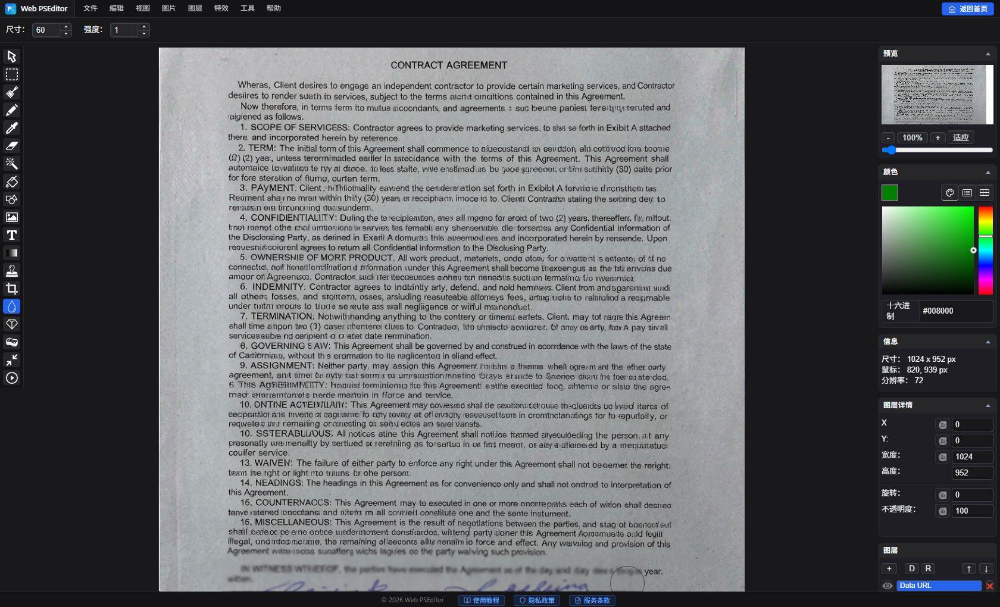

为敏感信息打马赛克与高斯模糊
一张银行流水截图、一份签过字的合同扫描、一张身份证照片，上面的号码被人用灰色涂了一把就发出来了。这类图每天都有，而且其中相当一部分能还原。打码不是「让它在我的屏幕上看起来看不清」，而是「在我交出去的那个文件里读不出来」。这是两个标准，只有一个能拿去应对外人。
模糊为什么不能当保证
高斯模糊是一次卷积：每个像素被替换成邻域像素的加权平均。细节不是被加密，是被平均掉了，而平均是一个有损操作——学界花了几十年研究怎么把它反推回来。已发表的去模糊工作，能靠「这个场景大概长什么样」的先验，从模糊图里还原出可读的文字和可认的人脸：字母的形状、脸的轮廓、号码是七位这件事本身。
马赛克对小字号更糟。块平均抹掉了像素细节，却保留了字符的剪影——一串号码还是那一排深色方块，节奏和数字一致。块小一点，光凭节奏就能读出一个日期、一个邮编、一个四位 PIN。
还有一种泄漏跟像素无关，跟图层有关：如果模糊是作为一个可撤销的效果挂在图层上，之后有人打开工程、把效果删掉，内容就回来了。导出的文件是安全的，工程文件不是。图涉及法律问题，就在副本上做、导出交付，工程文件本身也当机密对待。
按风险选手段
| 要遮什么 | 用什么 | 为什么 |
|---|---|---|
| 密码、PIN、证件号、卡号 | 实心色块 | 没留下可重建的信息。短字符串就算重度模糊也能猜 |
| 签名 | 整笔迹范围的实心块 | 模糊保留了倾斜和运笔节奏，那正是伪造需要的 |
| 姓名、信封上的地址 | 实心块，或 Size 25 以上的马赛克 | 字够大，粗马赛克就够 |
| 路人的脸 | 马赛克，Size 15 到 25 | 挡住五官即可，看起来像有意为之，实践上也反推不回来 |
| 聊天截图里的一条消息 | 模糊画笔或马赛克 | 低风险、高数量，速度比完美覆盖更重要 |
动手之前，先记住一条
马赛克和高斯模糊都作用于整个图层，不是选区。 确认对话框，整张截图都被打上码，这几乎从来不是你想要的。两条绕开的办法，都能在浏览器里完成：
- 复制一层，再擦回去。 【图层】→【复制】，效果加在副本上，然后用橡皮擦把不该模糊的地方擦开，下面那层原始的清晰画面就透出来了。
- 在上面盖。 新建图层，用形状工具画实心矩形压住敏感区域。下面一个像素都没动，而实心块本身就是最强的打码方式。
四种做法，按场景选
先复制图层。选中副本，点 【特效】→【马赛克】。对话框只有一个 Size，从 1 到 100，单位是图层短边的百分比：1000 像素宽的截图上取 10，块大约 100 像素，已经很粗。确认后把不该模糊的地方擦开。文字需要的块比人脸更大——判断标准是 100% 缩放下的样子，不是适应窗口，那里任何设置看起来都像毁掉了。
同样在副本上：【特效】→【常见滤镜】→【高斯模糊】。只有一个 百分比 滑杆，范围 0 到 50。它是一个挂在图层上的实时滤镜，应用之后还能改——不像马赛克会直接改写像素。这种灵活性在编辑时很方便，在工程文件流传出去时很危险，所以对外发布一律导出一份压平后的副本。
选工具栏的模糊工具，直接刷。默认笔刷 30、强度 1；把尺寸调大到两三笔盖住一行，靠重复走几遍，而不是压着不放。这是聊天截图最快的方式，也是最不精确的——笔刷边缘会留一道软边，软边里可能还剩一个原始像素，所以别用它处理证件号。

新建图层，用形状工具画矩形，填一个接近页面底色的颜色。从第一个字上方几个像素画到最后一个字下方几个像素，左右都要宽出来。实心块不携带任何信息，截图、再压缩都活得下来，也是唯一能在合规审查里站住的做法。
要遮的往往不止那几个字
失败的打码多数不是模糊太弱，是框得太紧。四个东西在字形外面，每一个都能泄漏：
- 抗锯齿边缘。 文字渲染带软边，那些边缘像素落在字母外面、却在阅读范围内。四边各外扩三到五像素。
- 阴影与透印。 双面文件的扫描件常能隐约看到背面；在桌上拍的文件会带上手的影子。这些也要一起遮，否则它们一样在描述下面的内容。
- 周边信息。 藏了账号却留下银行名、支行、账单周期，足够定位到人。
- 选框和控制点。 截图时工具还开着？那些控制点会告诉读者你刚才在改哪个字段。
验收看导出文件，不看画布
发布之前闭环一次：导出，再打开导出的文件——忘了隐藏的图层在压平的 JPG 里看不见，在工程里才看得见，而最终要交出去的是导出文件；放大到 400%——软边、残余笔画、只盖住一半的字符，只在这个倍数下显形；自己试着读一遍——把显示器亮度调高，如果四位数字里你能靠形状猜出两位，那就是弱点；看一眼缩略图——聊天软件发送前会缩图，全尺寸安全的打码有时会在 20% 尺寸下变薄。
常见问题 FAQ
马赛克和高斯模糊能被还原吗？
严格说不叫还原，细节确实没了。但对于结构强的内容——印刷文字、人脸、签名的运笔——已发表的研究显示能反推出相当一部分信息。马赛克在小字上更弱，因为块网格保留了字母的形状。判断标准很简单：人能不能靠上下文猜出这些字符。能，软件也能。密码、证件号、签名请用实心块。
直接画一个黑色块是不是更安全？
是，实心块就是最安全的一种。它不携带任何可重建的信息，经过截图、二次压缩也不会「变形泄漏」。马赛克和模糊的意义只在于好看一点、不那么突兀，安全性上永远不如色块。
一张图里有多处敏感信息，要重复操作吗？
要，每处单独处理。但别每处都复制一层——更省事的做法是新建一个图层，用形状工具画多个色块盖住所有敏感区，一次导出。这样原始画面始终没被改动过。
相关教程推荐
拿一张带手机号的截图，用实心块盖住，导出后重新打开，试着读出那串号码。